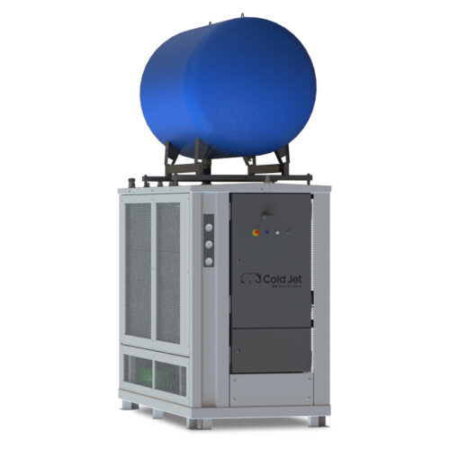
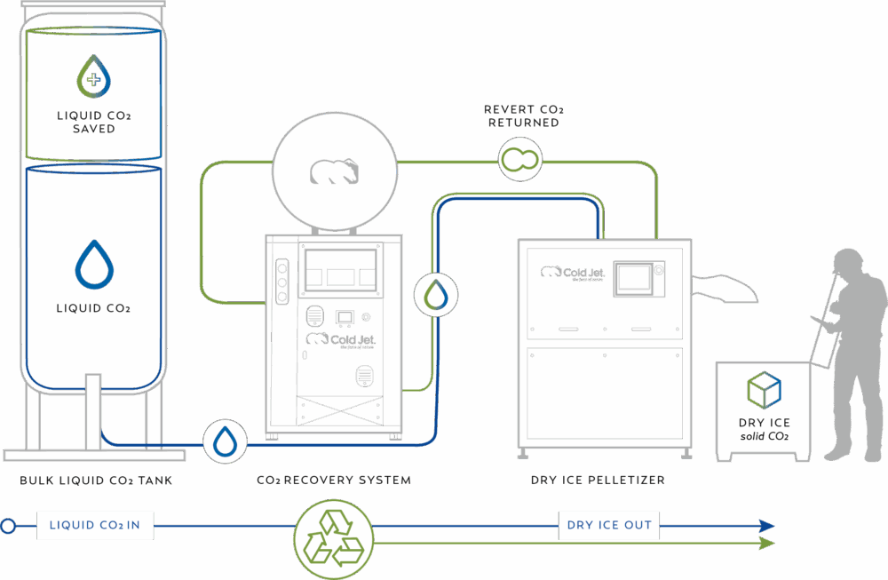
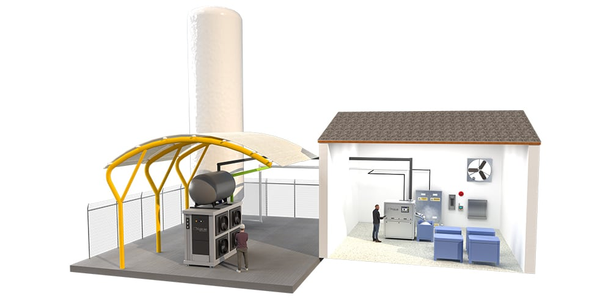
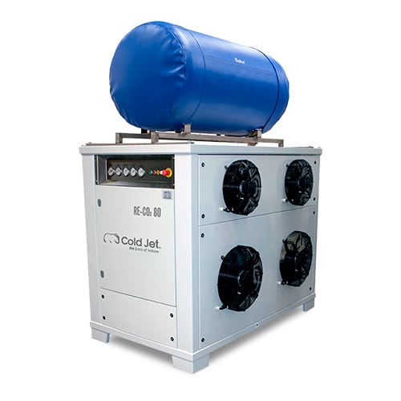
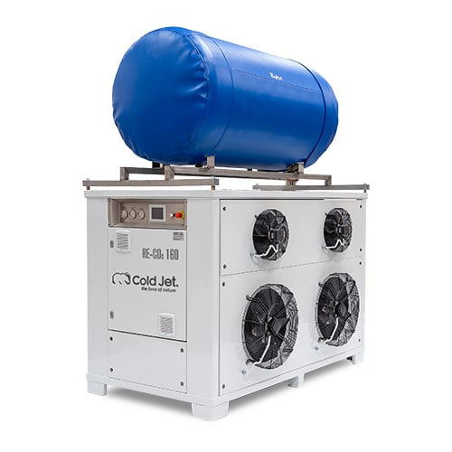
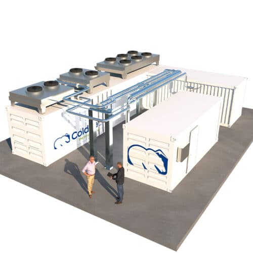

COLD JET CO₂ RECOVERY SYSTEM
버려지던 CO₂를
다시 생산 자원으로.
드라이아이스 생산 과정에서 기체로 빠져나가는 CO₂를 포집하고 다시 액화해 펠렛타이저로 돌려보냅니다. 같은 원료에서 더 많은 드라이아이스를 생산하는 폐쇄형 순환 시스템입니다.
기존 Cold Jet 및 다수 제조사의 펠렛타이저와 통합 가능

Cold Jet가 공개한 설치 사례 기준 최대 수치이며, 실제 결과는 설비 구성과 운전 조건에 따라 달라집니다.
WHY RECOVER CO₂
생산량의 문제가 아니라,
원료 활용률의 문제입니다.
액체 CO₂가 대기압에서 드라이아이스 스노우로 전환될 때 상당량이 기체가 됩니다. 일반적인 생산 방식에서는 이 기체를 배출하지만, RE-CO₂는 이미 구매한 원료를 다시 생산 공정으로 되돌립니다.
생산할 때마다
기체 CO₂가 빠져나갑니다.
리커버리 시스템은 펠렛타이저 배출 가스를 회수해 냉각·압축하고, 재사용 가능한 액체 CO₂로 전환합니다.
HOW IT WORKS
빠져나간 가스를 다시 액체로.
생산은 하나의 순환이 됩니다.
기존 생산 라인에 회수·액화 경로를 더해 원료가 순환하는 구조를 만듭니다.

- 01가스 포집
펠렛타이저에서 배출되는 기체 CO₂를 모읍니다.
- 02냉각·압축
포집한 가스를 액화 가능한 상태로 만듭니다.
- 03재액화
기체 CO₂를 다시 액체 CO₂로 전환합니다.
- 04생산 재투입
회수한 액체 CO₂를 펠렛타이저로 되돌립니다.

INDOOR / OUTDOOR CONFIGURATIONBUILT AROUND YOUR OPERATION
새 설비뿐 아니라
현재 생산 라인에도.
모듈형 설계로 Cold Jet 펠렛타이저는 물론 다수 제조사의 기존 장비에도 통합할 수 있습니다. 생산실 공간이 제한적이면 벌크 탱크 인근의 외부 설치도 검토할 수 있습니다.
- ✓기존 라인 통합생산을 유지하면서 설비 조건에 맞춘 연결 검토
- ✓모듈식 확장필요한 회수 용량과 향후 증설 계획에 맞춘 구성
- ✓통합 제어320 V2는 Cold Jet 펠렛타이저 제어판과 직접 통신
RE-CO₂ LINEUP
생산 규모에 맞춰
회수 용량을 선택합니다.
표시된 수치는 드라이아이스 생산량이 아닌 CO₂ 액화 용량입니다. 현재 펠렛타이저와 피크 배출량, 운전 시간, 증설 계획을 함께 검토해 모델을 결정합니다.

RE-CO₂ 80
액화 용량
소규모 드라이아이스 생산을 위한 컴팩트한 회수 시스템
상세 보기 →
RE-CO₂ 160
액화 용량
중소 규모 생산 라인을 위한 모듈형 회수 시스템
상세 보기 →RE-CO₂ 320 V2
액화 용량
통합 제어와 다중 시스템 운전을 지원하는 지능형 모델
상세 보기 →
RE-CO₂ 3500
액화 용량
컨테이너형 구성의 대규모 중앙 회수 시스템
상세 보기 →모델 매칭은 Cold Jet 권장 조합을 기준으로 한 1차 안내입니다. 실제 구성은 펠렛타이저 수량과 운전 패턴, 배관 거리, 저장 탱크 조건을 확인한 뒤 확정합니다.
RECOVERY REVIEW
우리 공장에서는
얼마나 회수할 수 있을까요?
정확한 판단에는 장비 가격보다 현재 CO₂ 사용량과 운전 조건이 먼저 필요합니다. 아래 네 가지 정보로 적정 용량과 설비 구성을 검토할 수 있습니다.
현재 펠렛타이저제조사·모델·설치 대수
실제 생산량시간당 생산량·일일 운전 시간
원료 사용 조건액체 CO₂ 사용량·탱크 압력
설치 환경실내외 공간·배관 거리·증설 계획
수치가 모두 없어도 괜찮습니다.확인 가능한 정보부터 알려주시면 필요한 측정 항목을 안내합니다.
회수 시스템 상담하기 →FAQ
도입 전,
많이 묻는 질문
기존 펠렛타이저에도 추가할 수 있나요?+
가능합니다. Cold Jet 장비뿐 아니라 다수 제조사의 펠렛타이저와 통합할 수 있도록 설계되었습니다. 현장 배관과 제어 조건은 사전 확인이 필요합니다.
실내에 설치할 공간이 부족하면 어떻게 하나요?+
설비 조건이 맞으면 벌크 액체 CO₂ 탱크 인근의 외부 설치를 검토할 수 있습니다. 최종 위치는 유지보수 동선과 배관 길이, 지역 환경 조건을 함께 확인합니다.
어떤 모델을 선택해야 하나요?+
펠렛타이저의 정격 생산량만으로 결정하지 않습니다. 실제 가스 발생량, 동시 운전 대수, 운전 시간과 향후 증설 계획을 기준으로 회수 용량을 산정합니다.
표시된 절감 수치를 그대로 기대할 수 있나요?+
최대 수치는 Cold Jet가 공개한 설치 사례 기준입니다. 실제 절감 효과는 원료 가격, 생산 부하, 회수율과 설비 운영 조건에 따라 달라지므로 현장 데이터를 바탕으로 검토해야 합니다.